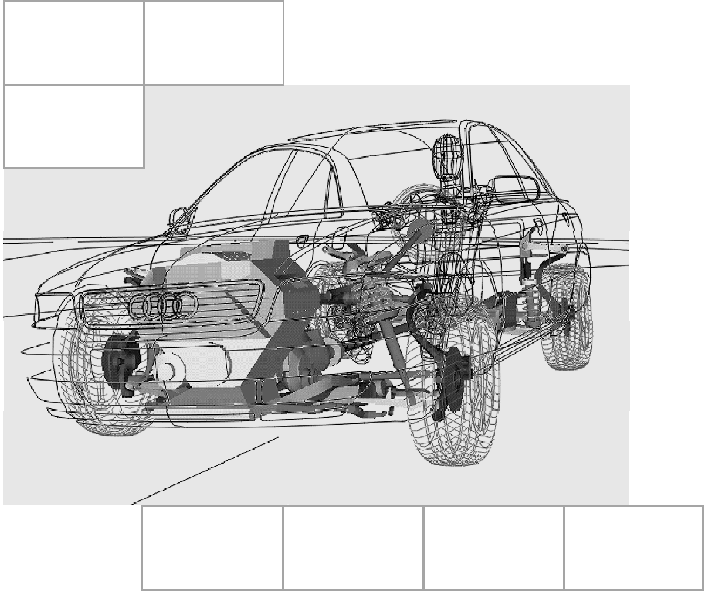
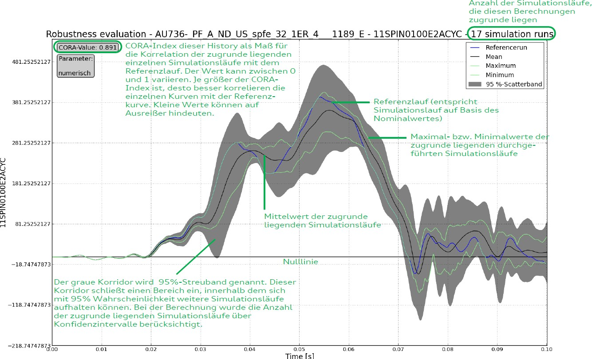

[redacted]
[redacted-phone]
[redacted-phone]
[redacted-person] / OE
Hausruf [redacted-phone]
Telefax [redacted]
[redacted-co]

D[redacted][redacted-person] System LAH.DUM.880.J
Verteiler
| [redacted-person] | [redacted-person] |
| [redacted-person] | [redacted-person] |
Abstimmung
Im Original unterschrieben
Änderungsdokumentation
Inhaltsverzeichnis
Entwicklungsablauf 15
Prüfmittel / Erprobungsträger 20
Umfänge 25
Das vorliegende Lastenheft und die Norm [redacted-co]99000 ff. sind zusammen die Grundlage des zu erbringenden Leistungsumfanges des Auftragnehmers.
[redacted-person] beschreibt Leistungen, Anforderungen, Prüf- und Erprobungsbedingungen, die das zu entwickelnde Produkt und der Auftragnehmer mindestens erfüllen müssen.
[redacted-person] ist vom Auftragnehmer in einem Pflichtenheft zu dokumentieren. [redacted-person] ist vom Auftragnehmer auf dem aktuellen Stand zu halten.
In diesem Lastenheft wird die anzuwendende Methodik detailliert beschrieben. [redacted-person] resultiert aus der Entwicklungserfahrung der [redacted-co] und ist deshalb für den Entwicklungsprozess bindend. [redacted-person] der Simulationsergebnisse auf hohem Niveau soll damit sichergestellt werden. [redacted-person] sind nur dann zulässig, wenn sie in [redacted-person] besser oder effektiver sind und dies der [redacted-co]-Fachabteilung eindeutig nachgewiesen wird und von dieser akzeptiert wurde.
Abweichungen von diesem Lastenheft sind während der Angebotsphase mit der zuständigen [redacted-co]- Fachabteilung abzustimmen und schriftlich (mit Unterschrift [redacted-co]) festzuhalten. Dieses gilt für vom Entwicklungspartner ausgeschlossene Teilumfänge und für, aus dessen Sicht, zusätzliche erforderliche Umfänge.
Es gelten die Projektvorgaben der [redacted-co]99000 sowie die nachfolgend beschriebenen.
[redacted-person] (kurz GE) – Vergaben sind Absprachen mit der [redacted-co]-Fachabteilung ebenfalls erforderlich. Dies ist im Text durch „in Absprache mit der [redacted-co]-Fachabteilung“ oder ähnliches gekennzeichnet. Falls die Zuständigkeit beim GE liegt, ist die Formulierung „[redacted-co]/GE-Fachabteilung“.
[redacted-person] übernimmt als Entwicklungsdienstleister die Abstimmung der Seitenschutzsysteme mit Hilfe von geeigneten Versuch- und Simulationssystemen. Dabei ist eine virtuell getriebene Entwicklung zu fokussieren.
Es gelten die Anforderungen des Kapitels "Entwicklungs- und Lieferumfang" der [redacted-co]99000.
[redacted-person] der Arbeiten hat [redacted-co] das Recht, die bis dahin erreichten Ergebnisse für eigene Zwecke und für alle Gesellschaften des VW-Konzerns ohne Einschränkung zu verwenden, ohne dafür besondere Vergütungen zu leisten. Darin enthalten ist auch die Befugnis, die Entwicklung auf Basis des bis dahin erreichten Standes durch Dritte fortführen zu lassen.
Es ist die [redacted-person] der Seitenairbagmodule (Airbag zum Schutz von Thorax, Abdomen und Becken), für die vorderen und hinteren äußeren Passagiere zu entwickeln. Einbauort vorne in der Sitzlehne unter Bezug. Einbauort hinten in der Sitzlehne oder im Seitenpolster unter Bezug. Es ist darüber hinaus die [redacted-person] von Mittenairbagmodulen (Centerairbag) zu entwickeln, sofern dies Projektstand ist.
Es ist die [redacted-person] eines Kopfschutzsystems für die 1., die 2. und – falls vorhanden – 3. Sitzreihe für die äußeren Passagiere bezüglich Rückhaltewirkung zu entwickeln.
Es ist die Funktion weiterer Airbags im Innenraum zu entwickeln, sofern diese Projektstand sind. Im weiteren Verlauf dieses Lastenhefte werden diese Airbags nicht weiter spezifiziert beziehungsweise angesprochen, sind aber immer mit zu betrachten. Die notwendigen Randbedingungen sind mit der [redacted-co]-Fachabteilung abzustimmen.
Es ist sicherzustellen, dass bei allen möglichen Insassen-/Sitzkonfigurationen unabhängig vom Lastfall kein Kopfkontakt mit der Tür-/Seitenverkleidung stattfindet. Dies ist mit Worst-[redacted-person] sicherzustellen. In Ausnahmefällen kann nach Rücksprache mit der [redacted-co]-Fachabteilung eine passive Auslegung der Verkleidungsteile in Betracht gezogen werden.
[redacted]und Seitenschutzsystem sind gemeinsam im Gesamtsystem zu betrachten. Dies hat in Zusammenarbeit mit den [redacted-co]- bzw. GE-Fachabteilungen und den Bauteillieferanten zu geschehen.
Wenn der Auftragnehmer erkennt, dass vertraglich festgelegte Ziele nicht oder nur verspätet oder nur mit einem erhöhten Kostenaufwand (für [redacted-co] bzw. Bauteillieferant) zu erreichen sind, hat der Auftragnehmer die [redacted-co]- bzw. GE-Fachabteilung sofort zu informieren und Vorschläge auszuarbeiten, die zur Beseitigung der entstandenen Probleme geeignet sind. Dabei ist es unerheblich, ob das Problem beim Auftragnehmer oder bei [redacted-co] oder dem GE begründet liegt.
Die [redacted-co]/GE-Fachabteilung bewertet dann die eingereichten Vorschläge und entscheidet, nach welchem technischen Konzept der Auftragnehmer die Arbeiten fortsetzen wird.
[redacted-person] beinhaltet unter anderem:
[redacted-person]-Systementwicklung mit entsprechenden Simulationen und Versuchen (Schlitten, Komponentenversuche in Systemumgebung, …)
[redacted-person] der Wirk- und Leistungscharakteristik des gesamten seitlichen Schutzsystems, bestehend u.[redacted-person] den Airbag-Systemen, den Gurtsystemen und den Verkleidungsteilen, in realen Versuchen sowie den entsprechenden Simulationsmodellen des Seitenschutzsystems.
[redacted-person] aller relevanten gesetzlichen Vorgaben in der jeweils gültigen Form ist sicherzustellen.
[redacted-person] der Projektziele von Verbraucherschutzorganisationen ist sicherzustellen. Dabei sind Zielanpassungen im Projektverlauf abzudecken.
[redacted-person] sind dem
projektspezifischen Gesamtlastenheft Anlagen3) 4) 5)
zu entnehmen.
Einen erweiterten Funktionsnachweis durch Variation von Parametern (z.[redacted-person] und Position, Sitzeinstellung, Trefferlage …).
Die regelmäßige Teilnahme an Technik- oder Abstimmrunden ist Voraussetzung. Hierzu nötige Präsentationen, Protokolle, Anfragen etc. sind vom Auftragnehmer unmittelbar zu erstellen bzw. zu pflegen.
[redacted-person] mit Meilensteinen können bei der [redacted-co]/GE-Fachabteilung angefragt werden.
[redacted-person] verpflichtet sich, alle Anforderungen dem Angebot zugrundezulegen. Abweichungen vom Lastenheft sind dem Angebot beizufügen und zu dokumentieren.
Mit dem Angebot sind vom Auftragnehmer folgende Unterlagen der technisch zuständigen [redacted-co]/GE- Fachabteilungen zur Prüfung vorzulegen:
Liste der offenen Punkte und Abweichungen vom Lastenheft (analog zur Struktur des Lastenhefts)
Pflichtenheft
[redacted-person], die auch Engpässe bei anderen Aufträgen des Auftragnehmers berücksichtigt
Ressourcenaufteilung inkl. Organisationsstruktur des Entwicklungsteams
Projektplan
Projektzeitplan mit Mindestumfang nach [redacted-co]99000
Erprobungsplan, Schlittenkonfiguration und [redacted-person]/-durchführung
Ausfüllen der Angebotsübersichtsmatrix (siehe Anlage 1 am Ende dieses Dokumentes)
Im Verlauf der Entwicklung schriftlich von [redacted-co] bzw. vom GE festgelegte oder akzeptierte Termine werden Bestandteil dieses Lastenhefts. Termine können nur im Einvernehmen mit [redacted-co] bzw. dem GE geändert werden.
Forderungen des Auftragnehmers, die über die ursprünglich angebotenen Kosten hinausgehen, werden nicht zugelassen.
Internet
Einsatz eines kompatiblen Videokonferenzsystems
Einsatz von PAM-CRASH
Einsatz eines kompatiblen CAD-Systems
Online-Datenaustausch gemäß der Broschüre zum CAD/CAM-Datenaustausch
Standleitung zum [redacted-co]-Rechenzentrum oder eine gleichwertige Anbindung
Rechenkapazität ist nicht vorzuhalten, es kann dafür die [redacted-co]-Infrastruktur verwendet werden
Nutzung eigener Ressourcen ist im Angebot separat auszuweisen
Der aktuelle Terminplan ist bei der [redacted-co]/GE-Fachabteilung einzufordern.
Die von [redacted-co] bzw. dem GE vorgegebenen Termine sind bindend einzuhalten. Abweichungen vom Terminplan sind unverzüglich und ohne Aufforderung den [redacted-co]- bzw. GE-Verantwortlichen zu melden. Gleichzeitig sind der Abweichungsgrund sowie geeignete Maßnahmen zur Erreichung des ursprünglichen Terminplans aufzuzeigen.
[redacted-person] ist ein Terminplan anhand der von [redacted-co] bzw. vom GE mitgeteilten Ecktermine aufzubauen und der [redacted-co]- bzw. GE-Fachabteilung zur Verfügung stellen.
[redacted-person] liefert im Rahmen der Fortschrittsberichte die erforderlichen Daten für folgende Metriken:
Meilensteintrendanalyse basierend auf den vereinbarten Meilensteinen
Vergleich der geplanten und der tatsächlichen Dauer der Aktivitäten und Arbeitspakete basierend auf dem Projektzeitplan
Fehlerverfolgung inkl. Priorisierung und Bearbeitungsstatus
Planung des Versuchsteilestands gegenüber dem aktuellen Verbrauchsstand
Weitere projektspezifische technische Metriken, die kritische Aspekte messen, werden zwischen den Projektverantwortlichen des Auftragnehmers und der [redacted-co]- bzw. GE-Fachabteilung abgestimmt.
Ab Projektstart führt der Auftragnehmer eine Liste von offenen Punkten (LOP-Liste), in der sämtliche offene Punkte, Arbeitspakete, unerledigte Aktionen usw. chronologisch geführt werden. [redacted-person] dazu wird vom Auftraggeber zur Verfügung gestellt. [redacted-person] der Aktivitäten ist ebenfalls in dem Dokument zu pflegen.
[redacted-person] ist ständig zu aktualisieren und der [redacted-co]- bzw. GE-Fachabteilung und den beteiligten Lieferanten über das im Engineering-Portal zur Verfügung zu stellen.
[redacted-person] übernimmt die Funktions- und Dauererprobung der von ihm entwickelten Einzelkomponenten. [redacted-person] übernimmt die Funktionserprobung des Systems.
Entscheidend für den Nachweis eines funktionierenden Insassenschutzsystems ist die Performance im Crashversuch. Sollte sich zeigen, dass die Schlittenversuche ein positives Ergebnis ergaben, während im Crashversuch ein negatives Ergebnis ermittelt wurde, so erfolgt keine Freigabe, bis der Nachweis erbracht wird, dass im Crashversuch die Lastenheftanforderungen sicher erfüllt werden.
[redacted-person] der jeweiligen Freigaben seitens [redacted-co] bzw. GE hat der Systementwickler eine schriftliche Freigabeempfehlung für das Insassenschutzsystem an die [redacted-co]- bzw. GE-Fahrzeugsicherheit zu erteilen.
[redacted-person] sind nach Funktionsanforderungen und Designvorgaben zu integrieren.
Alle im Umfeld, auf dem Lastpfad und im Entfaltungsraum befindlichen Teile müssen bei der Entwicklung beachtet werden. [redacted-person], Schwachpunkte oder Kollisionen mit anderen Bauteilen sind vom Auftragnehmer aufzuzeigen, dem Verantwortlichen schriftlich mitzuteilen und in regelmäßigen Abständen auf Erledigung zu untersuchen.
[redacted-person] sind anhand von aussagekräftigen Unterlagen darzustellen. Außerdem sind in diesem [redacted-person] aufzuzeigen.
Die im Projekt zu entwickelnden Lastfälle sind dem
projektspezifischen Gesamtlastenheft Anlagen3) 4) 5)
zu entnehmen.
[redacted-person] in Gesetzen und Verbraucherschutztests, sowie der Einsatz von neuen Dummies (wie z.[redacted-person]50th, WS5th, Q3, Q6, Q10), müssen im Angebot mit berücksichtigt werden. Zielwerte dafür werden von der Fahrzeugsicherheit vorgegeben. Darüber hinaus können im Falle von weiteren, zusätzlich zu entwickelnden Airbags im Innenraum die Lastfälle um entsprechende interagierende Insassen erweitert werden. Es sind Aktualisierungen des
projektspezifischen Gesamtlastenheft Anlagen3) 4) 5)
bis 6 Monate vor SoP abzudecken.
Die [redacted-co]-internen Due-Care-Anforderungen sind von existierenden Gesetzes- oder Verbraucherschutztests abgeleitet und können von diesen in folgenden Punkten abweichen:
Geschwindigkeiten
Insassenkonfiguration
Trefferlagen
[redacted-person] wird im Laufe des Projektes maximal zweimal aktualisiert.
Für alle zu betrachtenden Lastfälle ist vom Auftragnehmer eine Darstellung der theoretischen H- Punktlagen im Sitzverstellfeld zu erstellen und zu dokumentieren.
[redacted-person] werden vom Auftragnehmer zur Dummypositionierung im Simulationsmodell herangezogen. Evtl. Abweichungen der H-[redacted-person] in der Simulation gegenüber dem theoretischen Sollwert sind zu dokumentieren und aufzuzeigen.
Darüber hinaus sind die Dummypositionen durch reale Einsitzversuche in der „Sitzkiste“ des Fahrzeuges und mit dem ersten verfügbaren Prototypen vom Auftragnehmer zu ermitteln, sobald diese im Projekt vorhanden sind. [redacted-person] der „Sitzkiste“ und des Fahrzeugs wird seitens des Auftraggebers sichergestellt.
[redacted-person] von Kopf- und Seitenairbag für Kinder in Kindersitzen in der 2. und – falls vorhanden
– 3. Sitzreihe ist sicherzustellen.
Ein direktes Anschießen der Kinder während der Entfaltung des Kopfairbags ist dabei zu vermeiden.
Die jeweiligen Ziele und Einsatzmärkte sind dem
projektspezifischen Gesamtlastenheft Anlagen3) 4) 5)
zu entnehmen.
Bei gemeinsamen Vergaben für mehrere Fahrzeuge sollten die Ziele für alle Fahrzeuge & Märkte möglichst mit gleichen Rückhaltesystemkomponenten erreicht werden. Falls dies nicht möglich ist, so sind die Lösungen möglichst kostenneutral zu halten.
[redacted-person] bearbeitet folgende Umfänge:
Häufig sind detaillierte Beschreibungen der einzelnen Punkte in den folgenden Kapiteln beschrieben.
Entwicklungsablauf
Basis für die Systementwicklung ist die Simulation in PAM-CRASH
[redacted-person]- und Komponentenversuche sind durch eine detaillierte Abbildung der Fahrzeugumgebung in der Simulation und den Versuchen vorgeschalteten Simulationen zu reduzieren
Erstellen und Pflegen von Versuchsübersichtstabellen (Gesamtfahrzeug-, Schlitten- und Komponentenversuche)
Betreuung und Durchführung von Schlitten- und Komponentenversuchen
Abstimmung mit den Bauteil- und Systemverantwortlichen zum aktuellen Teilestand
Erstellung von VISVERDI- bzw. Werkstattprogrammen
Zusteuerung der notwendigen Einzelbauteile in Zusammenarbeit mit den Teilelogistikern
Abstimmung von Versuchsterminen
Vor jedem Versuch sind die Versuchsziele schriftlich festzuhalten und nach Durchführung kritisch zu bewerten
Teilnahme an Projektgesprächen
Analyse und Auswertung der Schlitten- und Komponentenversuchsergebnisse
Erarbeitung bzw. Ableitung von Maßnahmen, welche zur Erreichung von Gesetzesanforderungen und Ratingzielen bzw. der Lastenheftanforderungen erforderlich sind
Sicherstellung der Umsetzung der erforderlichen Maßnahmen im Projekt
Unterstützung bei der Analyse und Auswertung von Gesamtfahrzeugversuchen
Aufbereitung und Vorstellung der Ergebnisse
Erstellung gremientauglicher Statusfolien, welche die Prognose des Projektstatus sowie Maßnahmen, deren Wirksamkeit mittels Simulation belegt ist, für jeden Rot- und Gelbpunkt aufzeigen
Abgleich der Ergebnisse mit den Lastenheftanforderungen
Abgleich mit Gesamtfahrzeug-Crashversuchen
Organisation und Durchführung einer Rückhaltesystem-Runde mit allen Projektbeteiligten einschließlich der Führung eines detaillierten Protokolls
Für jeden Schlitten-/Komponentenversuch ist im Vorfeld eine Prognose der Simulation erforderlich, welche die Notwendigkeit des Versuchs bestätigt
Vor jedem Schlittenversuch werden von der [redacted-person], Zündzeitpunkte, Rückhaltesystemparameter, usw. ermittelt und übertragen
Nach jedem Schlittenversuch ist ein Abgleich mit der Simulation durchzuführen. Abweichungen zwischen Simulation und Versuch sind darzustellen, zu analysieren und abzustellen
Entwicklungsvarianten der Komponenten (Airbag, Gurt, Verkleidungen etc.) sind auf Basis von Simulationen zu bewerten und Lösungen zu erarbeiten
Zu Meilensteinen (KE , VPT bzw. P-frei, B-frei, Start BMG) sind Robustheitsuntersuchungen und DoE durchzuführen. Ziel ist es, die geforderten Sicherheitsanforderungen mit optimaler Robustheit zu erreichen. Darauf sind die Rückhaltesysteme entsprechend auszulegen. [redacted-person] und Parameter dieser Robustheitsuntersuchungen sind der [redacted-co]- bzw. GE-Fachabteilung vorab vorzustellen und von dieser zu genehmigen.
Grundsätzlich sind die Positionierungseinflüsse bzgl. der Dummy-Extremitäten (Bein-, Becken-, Torso-, Arm- und Kopfeinstellung) in relevanten Toleranzen zu untersuchen.
Darüber hinaus ist im Rahmen der Systementwicklung sicherzustellen, dass die Fertigungstoleranzen des Rückhaltesystems (Toleranzangabe der CAD-Zeichnungen) keinen Einfluss auf die Robustheit des Gesamtsystem haben. Zu Projektmeilensteinen ist ein Versagensmodell der Strukturauslegung anzufordern ([redacted-person]) und zu bewerten. [redacted-person] zu bewertender Parameter ist in Tabelle 4 dargestellt.
|
|
|---|---|
|
|
|
|
| [redacted-person] |
|
| [redacted-person] |
|
| [redacted-person] |
|
|
|
|
|
|
|
|
|
[redacted-person] der Robustheistuntersuchungen sind immer in Referenz zur Basissimulation darzustellen. Es ist der Einfluss auf die jeweilige Dummymessstelle darzustellen und etwaige Sensitivitäten sind entsprechend herauszuarbeiten (siehe Abbildung 1 und Abbildung 2).

[redacted-person] der Seiten- und Kopfairbags bzw. eines Kopf-Thorax-Airbags ist gemäß den jeweiligen Bauteillastenheften auszulegen. [redacted-person] kann erweitert werden, wenn dies zum optimalen Schutz der Insassen bei allen Seitencrashs sowie Frontcrashs mit einer seitlichen Verzögerungskomponente und aufgrund von neuen oder geänderten Gesetzen, Ratings oder Verbraucherschutzanforderungen von Vorteil ist. [redacted-person] der definierten Abdeckbereiche ist seitens des von [redacted-co] definierten Airbaglieferanten nachzuweisen. [redacted-person] muss das Zusammenwirken von Seiten- und Kopfairbag bzw. eines Kopf-Thorax-Airbags zur Abdeckung des erzielten Bereichs bewerten.
[redacted-person] müssen sich komplett in dem für den Insassenschutz relevanten Zeitbereich zwischen Insassen und Verkleidung bzw. Struktur entfaltet haben. Dabei sind die Aufblaszeiten mit den Bauteillieferanten in Abhängigkeit zur Airbagleistung und zu den jeweiligen Lastfällen abzustimmen und zu optimieren.
Bei der Entwicklung des Rückhaltesystems ist der bestmögliche Insassenschutz über Parameteruntersuchungen zu ermitteln und einzustellen.
Darüber hinaus muss die Schutzfunktion für 5%- bis 95%- Dummies, sowie für kindliche Insassen im entsprechend geeigneten Kindersitz nachgewiesen werden.
Bei einem Ausströmen der Gasgeneratorgase aus dem Airbag-System, z.[redacted-person] den Innenraum, muss die Gefahr, dass es zu Verbrennungen beim Insassen im gesamten Sitzverstellbereich oder an Bauteilen kommt, ausgeschlossen sein. Dies ist in Abstimmung mit dem Bauteillieferanten sicherzustellen.
[redacted-person] des Luftsacks (Material, Faltung, etc.) ist den Verhältnissen im Fahrzeuginnenraum unter Berücksichtigung der möglichen Insassenpositionen im gesamten Sitzverstellfeld anzupassen. Entsprechend ergeben sich die Luftsackabmaße (inkl. etwaiger Abströmöffnung), das Faltschema des Luftsacks sowie der Einsatz bzw. die Position von Abnähern, Reißnähten, Fang- und Abspannbändern.
[redacted-person] hat grundsätzlich Priorität.
Shape und Faltung ist mit dem Bauteillieferanten gemeinsam zu erarbeiten.
[redacted-person] an den Luftsack (Geometrieänderungen, Abnäher, Faltung, …) ist eine Package- optimale Lösung anzustreben.
[redacted-person] ist während der gesamten Projektlaufzeit in Zusammenarbeit mit dem entsprechenden Bauteillieferanten zu überwachen und zu Meilensteinen (VPT, P-frei, B-frei, Gesamtfreigabe zu SoP) darzustellen.
[redacted-person] ist dabei sowohl auf Basis von CAE/CAD-Daten darzustellen und zu prüfen, als auch auf Basis von Hardwareteilen, sobald diese im Projekt verfügbar sind.
Prüfmittel / Erprobungsträger
Im Rahmen der Entwicklung sind aufgrund der geringen Erprobungsträger- und Erprobungsteilkapazitäten (Prototypen) geeignete Ersatzprüfungen zu erarbeiten und im Vorfeld mit der [redacted-co]/GE-Fachabteilung abzustimmen. Mittels der Ersatzprüfungen sollen die Funktion und die Rückhaltewirkung des Airbagsystems vor Durchführung der Crashversuche nachgewiesen werden.
Falls zur Systementwicklung – über die zur Bauteilvalidierung vom Lieferanten durchgeführten Komponentenversuche hinausgehend – weitere Konfigurationen benötigt werden (z.[redacted-person] Verkleidungen, Sitzen, Airbags, …), so sind diese ohne Mehrkosten für [redacted-co]/GE simulativ auszulegen und die Durchführung zu betreuen.
[redacted-person] zur Validierung der Simulationsmodelle sind grundsätzlich vorzusehen und vom Auftragnehmer mit anzubieten. Dabei sind die jeweiligen Kosten pro Versuch im Angebot separat auszuweisen:
[redacted-person] im beengten Bauraum
Analyse und Validierung des Entfaltungsverhaltens der RHS-Komponente
[redacted-person] / Dummy (WorldSID/ES2/SID2s) / Seitenairbag
Analyse und Validierung des Entfaltungsverhaltens der RHS-Komponente unter Berücksichtigung von Dummy-Interaktionen (z.[redacted-person] Schulteranschuss)
[redacted-person] / Dummy (WorldSID/ES2/SID2s) / Gurt
Analyse und Validierung der statischen Dummy-Belastungen durch Einwirkung der Gurtkomponente ([redacted-person] auf Schulterbelastung)
[redacted-person] muss bei den Versuchen mindestens verwendet werden:
[redacted-person]
3 Kameras mit mindestens 5000 Bildern pro Sekunde (zum Beispiel vorne, oben, Seite)
5 [redacted-person] (3-achsial)
Falls mit Crashtestdummy: Messtechnik analog Abschnitt 6.5.1
Ziel der Schlittenversuche ist, die Bauteile, die sich im Lastpfad befinden, aufeinander abzustimmen. Die maßgeblichen Lastfälle werden in Abhängigkeit von den Entwicklungsfortschritten mit der [redacted-co]- bzw. GE-Fachabteilung festgelegt.
[redacted-person] der Auslegung ist dabei in dieser Reihenfolge
Airbagpositionierung (ca. t=0-25ms)
Insassen (Kinematik & Belastungen)
Es sind Schlittenversuche für jedes Rückhaltesystem und für mindestens je eine Pfahl- und eine Barrierenkonfiguration durchzuführen. [redacted-person] der Versuche bei [redacted-co] ist nicht möglich.
[redacted-person] müssen eine [redacted-co]-Versuchsnummer erhalten und im VISVERDI einschließlich aller Bauteile und deren Teileständen eingetragen sein.
[redacted-person] müssen folgende Freiheitsgrade gewährleistet werden und unabhängig voneinander einstellbar sein:
[redacted-person] bzw. Türverkleidungsersatzkörper
Kinematik der vier Befestigungspunkte des Sitzes: Ziel ist es, eine eventuelle Neigung (mit X-, Y- und Z-Komponente) des Sitzes sowie eine Verformung der Sitzstruktur darzustellen.
Kinematik B-Säulenverkleidung bzw. B-Säulenersatzkörper
[redacted-person] der einzelnen Bauteile sind an das Verhalten des Gesamtfahrzeugs anzulehnen. Solange keine Gesamtfahrzeugversuche vorhanden sind, sind die entsprechenden Werte aus Gesamtfahrzeugsimulationen zu entnehmen. [redacted-person] ist von der [redacted-co]/GE-Fachabteilung zu genehmigen.
Bild 2: Freiheitsgrade am [redacted-person] (Prinzipdarstellung)
|
|
|---|
Bild 3: Segmentierung der Tür (Prinzipdarstellung) [redacted-person] müssen vom Setup aufgenommen werden können:
Türverkleidung bzw. Türverkleidungsersatzkörper (alle Befestigungspunkte)
B-Säulenverkleidung bzw. B-Säulenersatzkörper inkl. eventuell relevanter Einbauteile (alle Befestigungspunkte)
Sitz (alle Befestigungspunkte)
Gurtsystem
Für das jeweilige in der Entwicklung herangezogene Schlittensetup ist ein Nachweis über die Reproduzierbarkeit der eingestellten Schlittenkinematik, d.[redacted-person] eingestellten Führungsgrößen zu erbringen. Insbesondere sind hiermit die Beschleunigungen/ Wege des globalen Schlittenaufbaus, als auch die lokalen Beschleunigungen/ Wege im relevanten Bereich (Verkleidungen, Sitz) ohne den Einfluss eines Rückhaltsystems gemeint. [redacted-person] ist durch mindestens drei aufeinanderfolgende Versuche erbracht, wobei eine mittlere Abweichung von 10% zulässig ist. Weiterhin sind Untersuchungen auf Basis der Simulationsmodelle durchzuführen. [redacted-person] ist mit dem Auftraggeber abzustimmen.
In frühen Projektphasen kann es aufgrund noch nicht zur Verfügung stehender Teile erforderlich sein Schlittenversuche mit Schaumfrästeilen oder Verkleidungsteilen aus anderen Projekten durchzuführen. Die erforderlichen Frästeile sind vom Auftragnehmer zu erstellen und Teil der Beauftragung.
[redacted-person] nicht an einen Gesamtfahrzeuglastfall angelehnt werden, so ist dies gegenüber der [redacted-co]/GE-Fachabteilung zu begründen und von dieser zu genehmigen.
[redacted-person] muss eine Aktivierung aller Seitenschutzsysteme (inkl. Gurtstraffer) ermöglichen und ist mit der [redacted-co]/GE-Fachabteilung abzustimmen.
[redacted-person] ist im Rahmen der Systementwicklung als entsprechendes Simulationsmodell darzustellen. [redacted-person] dieses Modells liegt in der Verantwortung des Auftragnehmers.
[redacted-person] ist vor Angebotsabgabe der [redacted-co]/GE-Fachabteilung vorzustellen und eventuell daraufhin anzupassen. [redacted-person] ist die Beschreibung der endgültigen Konfiguration beizulegen.
Für die Aktualisierung der [redacted-person] auf den nächsthöheren Entwicklungsstand ist ein Paketpreis „Umbau“ anzubieten. Zusätzlich ist ein Einzelpreis für optional zusätzliche Umbauten anzugeben. [redacted-person] eines Umbaus umfasst dabei folgende Punkte:
Aktualisierung vom Grundaufbau (zum [redacted-person] Aufbau für neue [redacted-person])
[redacted-person] „Umbau“ beinhaltet auch die zugehörigen Einfahrversuche.
Ausgenommen von diesem Umfang sind Umbauten an Rückhaltesystemen & Sitz und Austausch von beschädigten Bauteilen (zb. Verkleidungsteile). [redacted-person] ist bei jeder Versuchsdurchführung ohne Mehrkosten möglich.
[redacted-person] muss bei den Versuchen mindestens verwendet werden:
[redacted-person]
Mindestens 4 Kameras mit mindestens 5000 Bildern pro Sekunde (zum [redacted-person], vorne, Seite, Details oder oben)
Beschleunigungsaufnehmer
5x Sitz (3-achsial)
4x TVKL (3-achsial)
6x Tür bzw. B-Säule (3-achsial)
sowie auf allen beweglichen Teilen des Schlittenaufbaus (3-achsial)
Messtechnik analog Abschnitt 6.5.1
Kontaktfolien:
Sitz zu Verkleidungen (TVKL & BSVKL)
Gurtkräfte und –einzug
[redacted-person] muss, soweit die Teile auf dem Schlitten verbaut sind, nach der für Crashfahrzeuge festgelegten Konfiguration erfolgen. Dafür sind zum Beispiel die Beschleunigungsaufnehmer nach der entsprechenden Arbeitsanweisung zu positionieren.
Die erforderlichen Entwicklungsversuche im Gesamtfahrzeug sind nicht Teil dieses Lastenhefts.
[redacted-person] ist mit der Gesamtfahrzeugversuchsplanung der [redacted-co]/GE-Crashplanung abzustimmen.
[redacted-person] sind mit den Konstruktions- und Versuchsabteilungen abzustimmen - entsprechende Unterlagen, wie z. [redacted-person] – sind zu erstellen und zur Verfügung zu stellen. Weiter sind Versuchs- und Ergebnisübersichten für Crashversuche zu erstellen und den zuständigen Abteilungen zur Verfügung zu stellen.
[redacted-person] unterstützt bei der Vorbereitung der Crashversuche und ist verantwortlich für die Montage der korrekten Stände der rückhaltesystemrelevanten Bauteile. [redacted-person] erhält die Vorschau für die nächsten Crashversuche und definiert die notwendigen Teile mit exaktem Teilestand.
[redacted-person] dazu sind dem sind dem Lastenheft
LAH.DUM.880.FN [redacted-person] Dokumentation
zu entnehmen.
[redacted-person] dazu sind dem sind dem Lastenheft
LAH.DUM.880.FN [redacted-person] Dokumentation
zu entnehmen.
[redacted-person] zur Druckmessung in den Airbagsystemen ist vor Versuchsdurchführung bei [redacted-co] vorzustellen und von der zuständigen [redacted-co]-Fachabteilung zu genehmigen.
Vorzustellen ist:
Messort
Aufnehmertyp
Auswertung
Schlauchtyp
Schlauchlänge
[redacted-person], Aufnehmer
Vor der ersten Versuchsdurchführung ist eine Gesamtplanung des Teilebedarfs zu erstellen und mit der [redacted-co]/GE-Fachabteilung abzustimmen. Eventuell notwendige Sonderbauten bzw. Umbauten sind in Eigenregie durchzuführen und Teil dieses Angebots.
Alle benötigten Sonderbauten (z.[redacted-person], geänderte Türinnenbleche, spezielle
Sitzumbauten, …) müssen vom Auftragnehmer übernommen werden und sind Teil des Angebots.
Umfänge
Gesamtfahrzeugmodelle werden von der [redacted-co]/GE-Fachabteilung zur Verfügung gestellt. Falls notwendig sind diese in Absprache mit der [redacted-co]-Fachabteilung zu erweitern bzw. zu detaillieren.
Schlittensimulationsmodelle sind in PAM-CRASH aufzubauen. Dabei sind alle relevanten Bestandteile – insbesondere die Aufbauten – in der Simulation abzubilden. [redacted-person] ist so bald wie möglich zu validieren. [redacted-person] ist simulativ eine Prognose zu erstellen, die im Anschluss an den Versuch abzugleichen ist.
Komponentenversuche sind grundsätzlich vor- und nachzusimulieren und zur Verbesserung der Modellqualität heranzuziehen.
[redacted-person] ist mitverantwortlich für die Modellqualität des Gesamtmodells und der rückhaltesystemrelevanten Komponenten sowie deren Validierung. Er unterstützt dabei – z.[redacted-person] Weitergabe des Schlittenmodells – die [redacted-co]/GE-Fachabteilung und den Bauteillieferant.
[redacted-person] verpflichtet sich, alle durchgeführten Simulationen in einer Variantenliste aufzuführen. Es ist eine Klassifizierung nach Gesamtfahrzeug-, Schlitten- und Komponentensimulation vorzunehmen. [redacted-person] mit Versuchen abgeglichen werden, so ist dies in der Liste zu vermerken. [redacted-person] muss wöchentlich aktualisiert werden.
Die vorzunehmenden Simulationen sind mit der von [redacted-co] vorgegebenen Prozessumgebung zu bearbeiten. Dies gilt für alle Gesamtfahrzeug-, Schlitten- und Komponentensimulationen.
Um die Fehlerquote zu reduzieren und den Datenaustausch mit anderen [redacted-co]-Fachabteilungen zu erleichtern, hat der Zusammenbau der Rechendecks der verschiedenen Lastfälle mit der Software LoCo (LoadCaseComposer) zu erfolgen. LoCo2 inklusive Anleitung und der hierfür notwendigen Konventionen wird von der [redacted-co]–Fachabteilung bereitgestellt. Eventuell notwendige Schulungen sind beim Hersteller der Software LoCo anzufragen.
[redacted-person], Ergebnis-Files, Dokumentationen und Auswertungen durch den Berechnungslieferanten sind im Anschluss an die Berechnung und Auswertung bei [redacted-co] in eine Datenbank (CAE-Bench2) zu importieren und dort auszuwerten. Deshalb ist beim Modellaufbau besonders darauf zu achten, dass alle benötigten CAE-Bench2-Aliase definiert sind.
Zur zentralen Auswertung von Versuchs- und Berechnungsergebnissen wird die Software CAViT (CAViewingTool) verwendet. CAViT inklusive Anleitung und der hierfür notwendigen Konventionen (z.[redacted-person] von Metainformationen mit LoCo) wird von der [redacted-co]–Fachabteilung bereitgestellt. Eventuell notwendige Schulungen sind beim Hersteller der Software CAViT anzufragen.
Für weitere Prozessschritte stehen ergänzende Tools zur Verfügung (zum [redacted-person]). Diese sind in Absprache mit der [redacted-co]/GE-Fachabteilung zu verwenden.
[redacted-person] sind dem Lastenheft
LAH.DUM.880.FP [redacted-person] Modellierung und Prozesse
zu entnehmen
[redacted-person] der Dokumentation zum Projektabschluss sind
LAH.DUM.880.FN [redacted-person] Dokumentation und Datenaustausch
zu entnehmen.
Weiterhin sind zum Projektabschluss folgende Aktualisierungen der Modelle durchzuführen:
Aktualisierung der Berechnungsmodelle auf die aktuellste bei [redacted-co] installierte oder eine vom Auftraggeber definierte PamCrash-Version
Falls dazu auch Aktualisierungen von Includes von Schnittstellenpartner oder Lieferanten notwendig sind, so ist für den Auftraggeber und die Partner eine Dokumentation über die notwendigen Maßnahmen zu erzeugen
Aktualisierung aller Prozessschritte. Dies sind insbesondere:
Dummy-Einsitzprozess
Sensorprozess
Alle bekannte Qualitätsanforderungen, die in den 3 Monaten nach Projektende gültig werden
Notwendige LoCo-Vorgaben und Clusterskripte
Die obigen Punkte sind rechtzeitig vor Projektende einzusteuern. Ohne den Abschluss der obigen Punkte wird die Abschlussrechnung seitens des Auftraggebers nicht anerkannt.
Die gesamte Dokumentation ist vom Auftragnehmer in deutscher Sprache zu erstellen.
Die technischen Unterlagen sind entsprechend [redacted-co]99000 nach [redacted-co]-Vorgaben auszuhändigen. [redacted-person] sind dem Lastenheft
LAH.DUM.880.FN [redacted-person] Dokumentation und Datenaustausch
zu entnehmen.
[redacted-person] stellt sicher, jeweils mit den aktuellen Unterlagen zu arbeiten.
Es gelten die am Ausgabedatum des Lastenheftes gültigen, mitgeltenden Unterlagen. Abweichungen sind mit der [redacted-co]/GE-Fachabteilung abzustimmen und im Lastenheft zu dokumentieren.
[redacted-person] sind selbständig zu besorgen.
LAH [redacted-phone]J Prozessbeschreibung allgemeine [redacted-person]
LAH.DUM.880.AE [redacted-person] zur Durchführung von Versuchen der Fahrzeugsicherheit bei externen Prüflabor
projektspezifisch [redacted-person] 3 [redacted-person] Seitencrash
projektspezifisch [redacted-person] Seitenairbag/Kopf-Thorax-Airbag
projektspezifisch [redacted-person] Kopfairbag
LAH.DUM.880.H [redacted]
LAH.DUM.880.EM [redacted]
VW82036 VW-[redacted-person] Airbag
LAH.DUM.880.FB [redacted-person] Komponente
LAH.DUM.857.BB [redacted-person]
LAH.DUM.880.FM [redacted-person] Airbags im Seitenschutz
[redacted] Entwicklungsbedingungen
[redacted] Fahrzeugzulieferteile allgemein sowie die darin genannten Dokumente.
Bezugsquellen für Normen und Dokumente: [redacted-person] können über die B2B Lieferantenplattform [redacted-co] unter der Internetadresse: http://www.vwgroupsupply.com mit einer Zugangsberechtigung abgerufen werden.